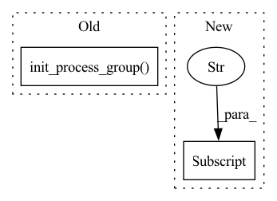

Pattern ID :19389
Before Change
backend = cfg.main.backend
print(f"initializing `{backend}` process group")
dist.init_process_group(
backend=backend,
init_method=f"tcp://{master_addr}:{master_port}",
rank=rank,
world_size=world_size,
)
print("successfully initialized process group")
rank = dist.get_rank()
world_size = dist.get_world_size()After Change
def compute_world_size(cfg: DictConfig) -> int:
// required env vars for initializing pg with the default init_method (env://)
os.environ["RANK"] = str(cfg.main.rank)
os.environ["WORLD_SIZE"] = str(cfg.main.world_size)
os.environ["MASTER_ADDR"] = cfg.main.master_addr
os.environ["MASTER_PORT"] = str(cfg.main.master_port)In pattern: SUPERPATTERN
Frequency: 4
Non-data size: 2
Instances Fragment ID: 63310446
Project Name: pytorch/torchx
Commit Name: a9ca56eb424c08ee7baedd322d9b172242c2162f
Time: 2023-04-16
Author: 43595115+kiukchung@users.noreply.github.com
File Name: torchx/examples/apps/compute_world_size/module/util.py
M Class Name: AnonimousClass
N Class Name: AnonimousClass
M Method Name: compute_world_size(1)
N Method Name: compute_world_size(1)
M Parent Class:
N Parent Class:
M File Name: torchx/examples/apps/compute_world_size/module/util.py
N File Name: torchx/examples/apps/compute_world_size/module/util.py
M Start Line: 17
M End Line: 29
N Start Line: 18
N End Line: 26
Before Change
print("rank = ", local_rank)
num_gpus = torch.cuda.device_count()
torch.cuda.set_device(local_rank % num_gpus)
dist.init_process_group(backend="nccl")
train_sampler = torch.utils.data.distributed.DistributedSampler(train_dataset)
train_dataloader = torch.utils.data.DataLoader(train_dataset, batch_size=cfg.device.batchsize_per_gpu,
num_workers=cfg.device.workers_per_gpu, pin_memory=True,
collate_fn=collate_function, sampler=train_sampler,After Change
warnings.warn("Warning! Old .pth checkpoint is deprecated. "
"Convert the checkpoint with tools/convert_old_checkpoint.py ")
ckpt = convert_old_model(ckpt)
task.load_state_dict(ckpt["state_dict"] )
model_resume_path = os.path.join(cfg.save_dir, "model_last.ckpt") if "resume" in cfg.schedule else None
Fragment ID: 63310452
Project Name: rangilyu/nanodet
Commit Name: 6c7dd670c9bc0311a26bfe0ebb775726902db779
Time: 2021-04-11
Author: lyuchqi@gmail.com
File Name: tools/train.py
M Class Name: AnonimousClass
N Class Name: AnonimousClass
M Method Name: main(1)
N Method Name: main(1)
M Parent Class:
N Parent Class:
M File Name: tools/train.py
N File Name: tools/train.py
M Start Line: 43
M End Line: 87
N Start Line: 51
N End Line: 91
Before Change
torch.cuda.set_device(args.gpu)
args.dist_backend = "nccl"
print(f"| distributed init (rank {args.rank}): {args.dist_url}", flush=True)
torch.distributed.init_process_group(
backend=args.dist_backend, init_method=args.dist_url, world_size=args.world_size, rank=args.rank
)
torch.distributed.barrier()
setup_for_distributed(args.rank == 0)After Change
args["gpu"] = args.rank % torch.cuda.device_count()
else:
print("Not using distributed mode")
args["distributed"] = False
return
args.distributed = True Fragment ID: 63310444
Project Name: sovit-123/fastercnn-pytorch-training-pipeline
Commit Name: 577b961dc31a8900285ae649cf3f491cffbb38aa
Time: 2022-10-24
Author: sovitrath6@gmail.com
File Name: torch_utils/utils.py
M Class Name: AnonimousClass
N Class Name: AnonimousClass
M Method Name: init_distributed_mode(1)
N Method Name: init_distributed_mode(1)
M Parent Class:
N Parent Class:
M File Name: torch_utils/utils.py
N File Name: torch_utils/utils.py
M Start Line: 264
M End Line: 284
N Start Line: 264
N End Line: 284
Before Change
// 1. 分布式初始化，对于每一个进程都需要进行初始化，所以定义在 main_worker中
cudnn.benchmark = True
dist.init_process_group(backend="nccl")
// 2. 基本定义，模型-损失函数-优化器
model = resnet18() // 定义模型，将对应进程放到对应的GPU上， .cuda(local_rank) / .set_device(local_rank)
torch.cuda.set_device(local_rank)After Change
print(
"Training Epoch: {epoch} [{trained_samples}/{total_samples}]\tLoss: {:0.4f}\tLR: {:0.6f}".format(
reduced_loss,
optimizer.param_groups[0]["lr"] ,
epoch=epoch,
trained_samples=step * args.batch_size + len(images),
total_samples=len(train_loader.dataset) Fragment ID: 63310443
Project Name: rentainhe/pytorch-distributed-training
Commit Name: 924a65892510a4cf1352ee408d6186344043f3a4
Time: 2021-01-05
Author: 596106517@qq.com
File Name: distributed.py
M Class Name: AnonimousClass
N Class Name: AnonimousClass
M Method Name: main_worker(3)
N Method Name: main_worker(3)
M Parent Class:
N Parent Class:
M File Name: distributed.py
N File Name: distributed.py
M Start Line: 60
M End Line: 111
N Start Line: 41
N End Line: 110